Desarrollado por : Area de Testing PWST
Fecha y hora de inicio : 2022-12-21 12:06:14
Duracion : 0:07:25.651934
Resultado : Total 52，Correctos 51 ，Errores 1 ，Taza de resultado 98.08%
Resumen 98.08% Errores 1 Fallidos 0 Correctos 51 Test realizados 52
| Caso de Prueba | Total | Correctos | Fallido | Error | Detalles | Captura del error |
| ScriptAmarillo.Test: Script Amarillo | 52 | 51 | 0 | 1 | Detalles | |
test |
ft1_1: 2022-12-21 12:06:16,035 - root - INFO - Se abre el chrome
2022-12-21 12:06:17,443 - root - INFO - Entra a la URL
2022-12-21 12:06:17,634 - root - INFO - Maximiza la pantalla
Traceback (most recent call last):
File "C:\Users\jsand\AppData\Local\Programs\Python\Python310\lib\site-packages\selenium-4.4.0-py3.10.egg\selenium\webdriver\remote\switch_to.py", line 87, in frame
frame_reference = self._driver.find_element(By.ID, frame_reference)
File "C:\Users\jsand\AppData\Local\Programs\Python\Python310\lib\site-packages\selenium-4.4.0-py3.10.egg\selenium\webdriver\remote\webdriver.py", line 856, in find_element
return self.execute(Command.FIND_ELEMENT, {
File "C:\Users\jsand\AppData\Local\Programs\Python\Python310\lib\site-packages\selenium-4.4.0-py3.10.egg\selenium\webdriver\remote\webdriver.py", line 434, in execute
self.error_handler.check_response(response)
File "C:\Users\jsand\AppData\Local\Programs\Python\Python310\lib\site-packages\selenium-4.4.0-py3.10.egg\selenium\webdriver\remote\errorhandler.py", line 243, in check_response
raise exception_class(message, screen, stacktrace)
selenium.common.exceptions.NoSuchElementException: Message: no such element: Unable to locate element: {"method":"css selector","selector":"[id="mainFrame"]"}
(Session info: chrome=108.0.5359.125)
Stacktrace:
Backtrace:
(No symbol) [0x00BFF243]
(No symbol) [0x00B87FD1]
(No symbol) [0x00A7D04D]
(No symbol) [0x00AAC0B0]
(No symbol) [0x00AAC22B]
(No symbol) [0x00ADE612]
(No symbol) [0x00AC85D4]
(No symbol) [0x00ADC9EB]
(No symbol) [0x00AC8386]
(No symbol) [0x00AA163C]
(No symbol) [0x00AA269D]
GetHandleVerifier [0x00E99A22+2655074]
GetHandleVerifier [0x00E8CA24+2601828]
GetHandleVerifier [0x00CA8C0A+619850]
GetHandleVerifier [0x00CA7830+614768]
(No symbol) [0x00B905FC]
(No symbol) [0x00B95968]
(No symbol) [0x00B95A55]
(No symbol) [0x00BA051B]
BaseThreadInitThunk [0x76796BD9+25]
RtlGetFullPathName_UEx [0x77B58FD2+1218]
RtlGetFullPathName_UEx [0x77B58F9D+1165]
During handling of the above exception, another exception occurred:
Traceback (most recent call last):
File "C:\Users\jsand\AppData\Local\Programs\Python\Python310\lib\site-packages\selenium-4.4.0-py3.10.egg\selenium\webdriver\remote\switch_to.py", line 90, in frame
frame_reference = self._driver.find_element(By.NAME, frame_reference)
File "C:\Users\jsand\AppData\Local\Programs\Python\Python310\lib\site-packages\selenium-4.4.0-py3.10.egg\selenium\webdriver\remote\webdriver.py", line 856, in find_element
return self.execute(Command.FIND_ELEMENT, {
File "C:\Users\jsand\AppData\Local\Programs\Python\Python310\lib\site-packages\selenium-4.4.0-py3.10.egg\selenium\webdriver\remote\webdriver.py", line 434, in execute
self.error_handler.check_response(response)
File "C:\Users\jsand\AppData\Local\Programs\Python\Python310\lib\site-packages\selenium-4.4.0-py3.10.egg\selenium\webdriver\remote\errorhandler.py", line 243, in check_response
raise exception_class(message, screen, stacktrace)
selenium.common.exceptions.NoSuchElementException: Message: no such element: Unable to locate element: {"method":"css selector","selector":"[name="mainFrame"]"}
(Session info: chrome=108.0.5359.125)
Stacktrace:
Backtrace:
(No symbol) [0x00BFF243]
(No symbol) [0x00B87FD1]
(No symbol) [0x00A7D04D]
(No symbol) [0x00AAC0B0]
(No symbol) [0x00AAC22B]
(No symbol) [0x00ADE612]
(No symbol) [0x00AC85D4]
(No symbol) [0x00ADC9EB]
(No symbol) [0x00AC8386]
(No symbol) [0x00AA163C]
(No symbol) [0x00AA269D]
GetHandleVerifier [0x00E99A22+2655074]
GetHandleVerifier [0x00E8CA24+2601828]
GetHandleVerifier [0x00CA8C0A+619850]
GetHandleVerifier [0x00CA7830+614768]
(No symbol) [0x00B905FC]
(No symbol) [0x00B95968]
(No symbol) [0x00B95A55]
(No symbol) [0x00BA051B]
BaseThreadInitThunk [0x76796BD9+25]
RtlGetFullPathName_UEx [0x77B58FD2+1218]
RtlGetFullPathName_UEx [0x77B58F9D+1165]
During handling of the above exception, another exception occurred:
Traceback (most recent call last):
File "C:\xampp\htdocs\versiones\automatizaciones\AutoPWST\ScriptAmarillo\testCase\ScriptAmarillo.py", line 104, in test
self.driver.switch_to.frame("mainFrame")
File "C:\Users\jsand\AppData\Local\Programs\Python\Python310\lib\site-packages\selenium-4.4.0-py3.10.egg\selenium\webdriver\remote\switch_to.py", line 92, in frame
raise NoSuchFrameException(frame_reference)
selenium.common.exceptions.NoSuchFrameException: Message: mainFrame
|
|
||||
test_000: Ingresa a la base de datos |
pt1_2: 2022-12-21 12:06:20,869 - root - INFO - Escribe el usuario
2022-12-21 12:06:21,023 - root - INFO - Escribe la contraseña
2022-12-21 12:06:21,196 - root - INFO - Se dio clic en el boton ingresar
2022-12-21 12:06:21,981 - root - INFO - Ejecutar Enterprise
2022-12-21 12:06:26,071 - root - INFO - Cambia entre pestañas
|
|
||||
test_001: Ingresa a pantalla Objetivos Diarios |
pt1_3: 2022-12-21 12:06:35,142 - root - INFO - Abre la pantalla de Objetivos Diarios
2022-12-21 12:06:35,761 - root - INFO - La pantalla ejecutada es Lista de precios.
2022-12-21 12:06:35,785 - root - INFO - Captura: C:\xampp\htdocs\versiones\automatizaciones\AutoPWST\ScriptAmarillo\report\img screen：20221221_12_06_35.png
2022-12-21 12:06:36,098 - root - INFO - Se presiona el boton 'Refrescar', para crear un nuevo registro igual al anterior.
2022-12-21 12:06:46,419 - root - INFO - Se presiona el boton 'Nuevo', para crear un nuevo registro.
|

|
||||
test_002: Agregar Objetivos Diarios |
pt1_4: 2022-12-21 12:06:47,068 - root - INFO - Se abrio la pantalla para el ingreso de un registro nuevo.
2022-12-21 12:06:47,199 - root - INFO - El campo 'Vendedor' si se encuentra visible.
2022-12-21 12:06:47,323 - root - INFO - El campo 'Fecha' si se encuentra visible.
2022-12-21 12:06:47,449 - root - INFO - El campo 'Efectividad %' si se encuentra visible.
2022-12-21 12:06:49,520 - root - INFO - Ingresa la efectividad del nuevo registro
2022-12-21 12:06:51,523 - root - INFO - Captura: C:\xampp\htdocs\versiones\automatizaciones\AutoPWST\ScriptAmarillo\report\img screen：20221221_12_06_51.png
2022-12-21 12:06:51,863 - root - INFO - Se hace el cambio de pestaña para continuar con el registro nuevo
2022-12-21 12:06:52,603 - root - INFO - Se presiona el boton 'Nuevo', para crear un nuevo registro.
2022-12-21 12:06:53,268 - root - INFO - El campo 'Grupo Política' si se encuentra visible.
2022-12-21 12:06:53,395 - root - INFO - El campo 'Tipo Objetivo' si se encuentra visible.
2022-12-21 12:06:53,520 - root - INFO - El campo 'Tipo Unidad' si se encuentra visible.
2022-12-21 12:06:53,604 - root - INFO - El campo 'Objetivo Cantidad' si se encuentra visible.
2022-12-21 12:06:53,686 - root - INFO - El campo 'Objetivo Cobertura' si se encuentra visible.
2022-12-21 12:06:56,521 - root - INFO - Ingresa el Objetivo Cantidad del nuevo registro
2022-12-21 12:06:56,770 - root - INFO - Ingresa el Objetivo Cobertura del nuevo registro
2022-12-21 12:06:57,002 - root - INFO - Se da clic en el boton Guardar; se debe crear un nuevo registro.
2022-12-21 12:06:57,151 - root - INFO - Se da clic en el boton Guardar; se debe crear un nuevo registro.
|

|
||||
test_003: Repetir Registro Objetivos Diarios |
pt1_5: 2022-12-21 12:06:57,423 - root - INFO - Se presiona el boton 'Refrescar', para crear un nuevo registro igual al anterior.
2022-12-21 12:07:02,588 - root - INFO - Se presiona el boton 'Nuevo', para crear un nuevo registro igual al anterior.
2022-12-21 12:07:03,224 - root - INFO - Se abrio la pantalla para el ingreso de un registro nuevo.
2022-12-21 12:07:03,337 - root - INFO - El campo 'Vendedor' si se encuentra visible.
2022-12-21 12:07:03,448 - root - INFO - El campo 'Fecha' si se encuentra visible.
2022-12-21 12:07:03,561 - root - INFO - El campo 'Efectividad %' si se encuentra visible.
2022-12-21 12:07:05,604 - root - INFO - Ingresa la efectividad del nuevo registro
2022-12-21 12:07:05,823 - root - INFO - Se da clic en el boton Guardar; se debe crear un nuevo registro.
2022-12-21 12:07:07,827 - root - INFO - Captura: C:\xampp\htdocs\versiones\automatizaciones\AutoPWST\ScriptAmarillo\report\img screen：20221221_12_07_07.png
2022-12-21 12:07:08,288 - root - INFO - Se presiona el boton 'Cerrar', para cerrar el mensaje de duplicidad de llave primaria
2022-12-21 12:07:08,414 - root - INFO - Se presiona el boton 'Cerrar', para cerrar la ventana
|
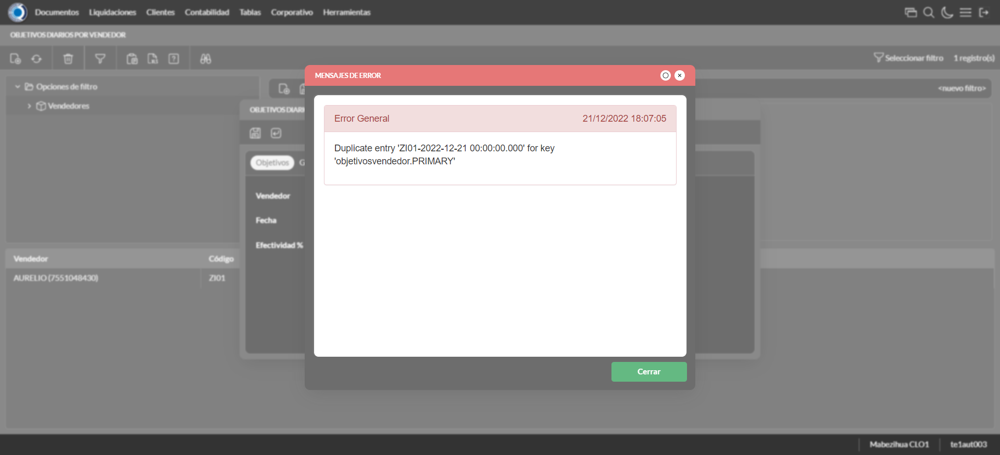 | ||||
test_004: Modifica Objetivos Diarios |
pt1_6: 2022-12-21 12:07:08,515 - root - INFO - Se presiona el boton 'Refrescar', para crear un nuevo registro igual al anterior.
2022-12-21 12:07:10,231 - root - INFO - Se da clic en el registro creado, para proceder a modificarlo.
2022-12-21 12:07:11,130 - root - INFO - Ingresa la efectividad del nuevo registro
2022-12-21 12:07:13,139 - root - INFO - Captura: C:\xampp\htdocs\versiones\automatizaciones\AutoPWST\ScriptAmarillo\report\img screen：20221221_12_07_13.png
2022-12-21 12:07:13,583 - root - INFO - Se hace el cambio de pestaña para continuar con el registro nuevo
2022-12-21 12:07:14,794 - root - INFO - Se da clic en el registro creado, para proceder a modificarlo.
2022-12-21 12:07:17,852 - root - INFO - Ingresa el Objetivo Cantidad del nuevo registro
2022-12-21 12:07:18,187 - root - INFO - Ingresa el Objetivo Cobertura del nuevo registro
2022-12-21 12:07:18,425 - root - INFO - Se da clic en el boton Guardar; se debe crear un nuevo registro.
2022-12-21 12:07:18,694 - root - INFO - Se da clic en el boton Guardar; se debe modificar la informacion del registro.
|

|
||||
test_005: Elimina Objetivos Diarios |
pt1_7: 2022-12-21 12:07:18,911 - root - INFO - Se presiona el boton 'Refrescar', para proceder a eliminar el registro.
2022-12-21 12:07:20,630 - root - INFO - Se da clic en el registro creado, para proceder a eliminarlo.
2022-12-21 12:07:20,882 - root - INFO - Se presiona el boton 'Eliminar', para eliminar el registro.
2022-12-21 12:07:22,895 - root - INFO - Captura: C:\xampp\htdocs\versiones\automatizaciones\AutoPWST\ScriptAmarillo\report\img screen：20221221_12_07_22.png
2022-12-21 12:07:23,214 - root - INFO - Se confirma el eliminado del registro
2022-12-21 12:07:23,521 - root - INFO - Se presiona el boton 'Refrescar', para crear un nuevo registro igual al anterior.
2022-12-21 12:07:23,751 - root - INFO - Se presiona el boton 'Cerrar', para cerrar la pantalla de Categorias Fiscales.
|
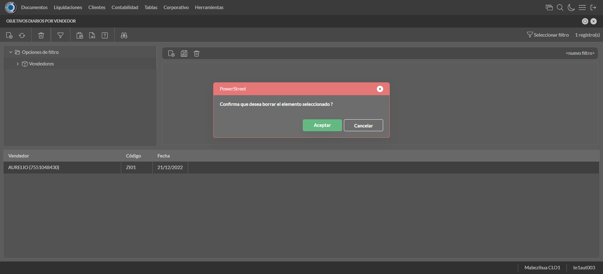 | ||||
test_006: Ingresa a pantalla Pop Ups |
pt1_8: 2022-12-21 12:07:24,928 - root - INFO - Abre la pantalla de PopUps
2022-12-21 12:07:25,734 - root - INFO - La pantalla ejecutada es PopUps.
2022-12-21 12:07:26,746 - root - INFO - Captura: C:\xampp\htdocs\versiones\automatizaciones\AutoPWST\ScriptAmarillo\report\img screen：20221221_12_07_26.png
2022-12-21 12:07:28,305 - root - INFO - Se ordenó por codigo.
2022-12-21 12:07:38,731 - root - INFO - Se presiona el boton 'Nuevo', para crear un nuevo registro.
|

|
||||
test_007: Agregar Pop Ups |
pt1_9: 2022-12-21 12:07:39,375 - root - INFO - Se abrio la pantalla para el ingreso de un registro nuevo.
2022-12-21 12:07:39,501 - root - INFO - El campo 'Codigo' si se encuentra visible.
2022-12-21 12:07:39,624 - root - INFO - El campo 'Orden' si se encuentra visible.
2022-12-21 12:07:39,750 - root - INFO - El campo 'Activo' si se encuentra visible.
2022-12-21 12:07:39,844 - root - INFO - El campo 'Descrición' si se encuentra visible.
2022-12-21 12:07:39,926 - root - INFO - El campo 'Modo Visualización' si se encuentra visible.
2022-12-21 12:07:40,010 - root - INFO - El campo 'Tipo Popup' si se encuentra visible.
2022-12-21 12:07:40,093 - root - INFO - El campo 'Fecha Desde' si se encuentra visible.
2022-12-21 12:07:40,176 - root - INFO - El campo 'Fecha Hasta' si se encuentra visible.
2022-12-21 12:07:40,258 - root - INFO - El campo 'Texto' si se encuentra visible.
2022-12-21 12:07:40,342 - root - INFO - El campo 'Seleccione Imagen' si se encuentra visible.
2022-12-21 12:07:40,467 - root - INFO - Ingresa el codigo del nuevo registro
2022-12-21 12:07:40,657 - root - INFO - Ingresa la orden del nuevo registro
2022-12-21 12:07:41,943 - root - INFO - Hizo click en el checkbox Activo
2022-12-21 12:07:42,197 - root - INFO - Ingresa la descripción del nuevo registro
2022-12-21 12:07:42,646 - root - INFO - Se dió click en la opción Pantalla Held.
2022-12-21 12:07:43,887 - root - INFO - Se dió doble click en el registro de Tipo Pop Up.
2022-12-21 12:07:44,139 - root - INFO - Ingresa el texto del nuevo registro
2022-12-21 12:07:45,151 - root - INFO - Captura: C:\xampp\htdocs\versiones\automatizaciones\AutoPWST\ScriptAmarillo\report\img screen：20221221_12_07_45.png
2022-12-21 12:07:45,513 - root - INFO - Se da clic en el boton Guardar; se debe crear un nuevo registro.
|

|
||||
test_008: Repetir Registro Pop Ups |
pt1_10: 2022-12-21 12:07:45,852 - root - INFO - Se presiona el boton 'Refrescar', para crear un nuevo registro igual al anterior.
2022-12-21 12:07:46,804 - root - INFO - Se presiona el boton 'Nuevo', para crear un nuevo registro igual al anterior.
2022-12-21 12:07:47,378 - root - INFO - Se abrio la pantalla para el ingreso de un registro nuevo.
2022-12-21 12:07:47,408 - root - INFO - El campo 'Codigo' si se encuentra visible.
2022-12-21 12:07:47,453 - root - INFO - El campo 'Orden' si se encuentra visible.
2022-12-21 12:07:47,507 - root - INFO - El campo 'Activo' si se encuentra visible.
2022-12-21 12:07:47,567 - root - INFO - El campo 'Descrición' si se encuentra visible.
2022-12-21 12:07:47,638 - root - INFO - El campo 'Modo Visualización' si se encuentra visible.
2022-12-21 12:07:47,736 - root - INFO - El campo 'Tipo Popup' si se encuentra visible.
2022-12-21 12:07:47,834 - root - INFO - El campo 'Fecha Desde' si se encuentra visible.
2022-12-21 12:07:47,945 - root - INFO - El campo 'Fecha Hasta' si se encuentra visible.
2022-12-21 12:07:48,044 - root - INFO - El campo 'Texto' si se encuentra visible.
2022-12-21 12:07:48,148 - root - INFO - El campo 'Seleccione Imagen' si se encuentra visible.
2022-12-21 12:07:48,305 - root - INFO - Ingresa el codigo del nuevo registro
2022-12-21 12:07:48,529 - root - INFO - Ingresa la orden del nuevo registro
2022-12-21 12:07:49,933 - root - INFO - Hizo click en el checkbox Activo
2022-12-21 12:07:50,271 - root - INFO - Ingresa la descripción del nuevo registro
2022-12-21 12:07:50,760 - root - INFO - Se dió click en la opción Pantalla Hand Held.
2022-12-21 12:07:52,030 - root - INFO - Se dió doble click en el registro de Tipo PopUp.
2022-12-21 12:07:52,279 - root - INFO - Ingresa el texto del nuevo registro
2022-12-21 12:07:52,403 - root - INFO - Se da clic en el boton Guardar; NO se debe crear un nuevo registro.
2022-12-21 12:07:53,420 - root - INFO - Captura: C:\xampp\htdocs\versiones\automatizaciones\AutoPWST\ScriptAmarillo\report\img screen：20221221_12_07_53.png
2022-12-21 12:07:53,819 - root - INFO - Se presiona el boton 'Cerrar', para cerrar el mensaje de duplicidad de llave primaria
2022-12-21 12:07:53,977 - root - INFO - Se presiona el boton 'Cerrar', para cerrar la ventana
|
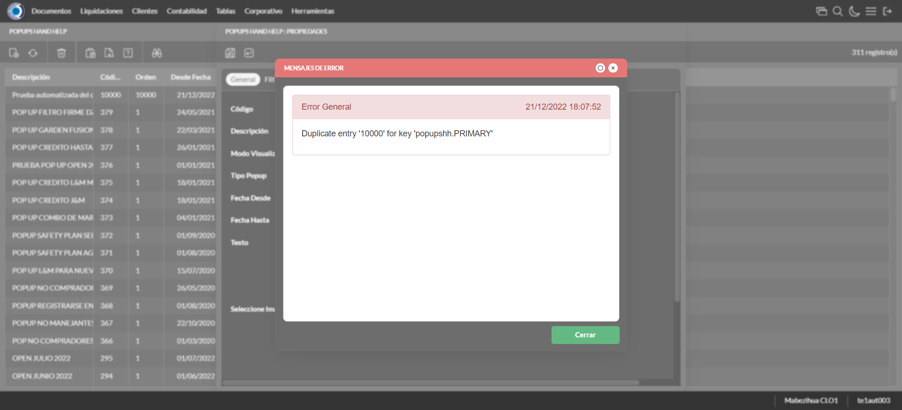 | ||||
test_009: Modifica Pop Ups |
pt1_11: 2022-12-21 12:07:54,113 - root - INFO - Se presiona el boton 'Refrescar', para proceder a modificar el registro.
2022-12-21 12:07:56,125 - root - INFO - Se dió dos veces click en el encabezado para modificar el orden de los registros.
2022-12-21 12:07:58,507 - root - INFO - Se da clic en el registro creado, para proceder a modificarlo.
2022-12-21 12:07:59,516 - root - INFO - Se modifica el contenido del campo Orden
2022-12-21 12:08:00,833 - root - INFO - Hizo click en el checkbox activo
2022-12-21 12:08:01,138 - root - INFO - Se modifica el contenido del campo Descripción
2022-12-21 12:08:01,570 - root - INFO - Se dió click en la opción Ambos.
2022-12-21 12:08:03,039 - root - INFO - Se dió doble click en el registro de Tipo PopUp.
2022-12-21 12:08:03,368 - root - INFO - Se modifica el contenido del campo Texto
2022-12-21 12:08:04,372 - root - INFO - Captura: C:\xampp\htdocs\versiones\automatizaciones\AutoPWST\ScriptAmarillo\report\img screen：20221221_12_08_04.png
2022-12-21 12:08:04,766 - root - INFO - Se da clic en el boton Guardar; se debe modificar la informacion del registro.
|
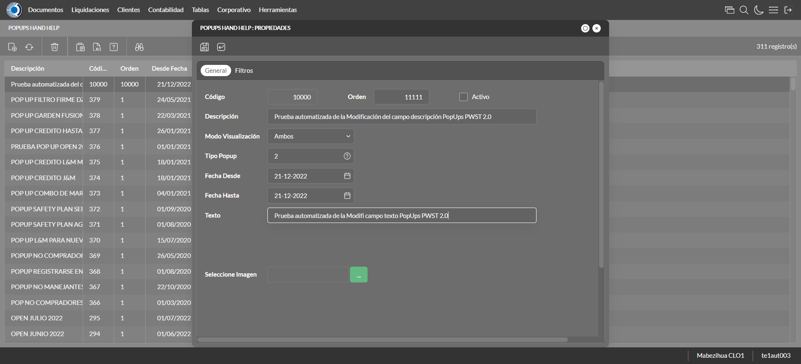 | ||||
test_010: Elimina PopUps |
pt1_12: 2022-12-21 12:08:04,995 - root - INFO - Se presiona el boton 'Refrescar', para proceder a eliminar el registro.
2022-12-21 12:08:06,707 - root - INFO - Se da clic en el registro creado, para proceder a eliminarlo.
2022-12-21 12:08:07,983 - root - INFO - Se presiona el boton 'Eliminar', para eliminar el registro.
2022-12-21 12:08:07,987 - root - INFO - Captura: C:\xampp\htdocs\versiones\automatizaciones\AutoPWST\ScriptAmarillo\report\img screen：20221221_12_08_07.png
2022-12-21 12:08:08,261 - root - INFO - Se confirma el eliminado del registro
2022-12-21 12:08:09,309 - root - INFO - Se presiona el boton 'Refrescar', para veriicar si el registro ha sido eliminado.
2022-12-21 12:08:10,118 - root - INFO - Se presiona el boton 'Cerrar', para cerrar la pantalla de Pop Ups.
|

|
||||
test_011: Ingresa a pantalla Paquetes Formulario |
pt1_13: 2022-12-21 12:08:11,244 - root - INFO - Abre la pantalla de Paquetes de Formularios
2022-12-21 12:08:11,898 - root - INFO - Captura: C:\xampp\htdocs\versiones\automatizaciones\AutoPWST\ScriptAmarillo\report\img screen：20221221_12_08_11.png
2022-12-21 12:08:12,124 - root - INFO - La pantalla ejecutada es Zonas de Ventas.
2022-12-21 12:08:22,361 - root - INFO - Se presiona el boton 'Nuevo', para crear un nuevo registro.
|
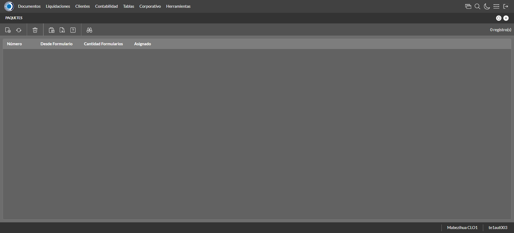 | ||||
test_012: Agregar Paquetes Formulario |
pt1_14: 2022-12-21 12:08:23,003 - root - INFO - Se abrio la pantalla para el ingreso de un registro nuevo.
2022-12-21 12:08:23,128 - root - INFO - El campo 'Número Paquete' si se encuentra visible.
2022-12-21 12:08:23,236 - root - INFO - El campo 'Formulario Inicial' si se encuentra visible.
2022-12-21 12:08:23,364 - root - INFO - El campo 'Cantidad Formularios' si se encuentra visible.
2022-12-21 12:08:24,518 - root - INFO - Captura: C:\xampp\htdocs\versiones\automatizaciones\AutoPWST\ScriptAmarillo\report\img screen：20221221_12_08_24.png
2022-12-21 12:08:24,818 - root - INFO - Ingresa la cantidad de formularios del nuevo registro
2022-12-21 12:08:24,910 - root - INFO - Se da clic en el boton Guardar; se debe crear un nuevo registro.
|

|
||||
test_013: Modifica Paquetes Formulario |
pt1_15: 2022-12-21 12:08:25,138 - root - INFO - Se presiona el boton 'Refrescar', para crear un nuevo registro igual al anterior.
2022-12-21 12:08:27,407 - root - INFO - Se da clic en el registro creado, para proceder a modificarlo.
2022-12-21 12:08:28,414 - root - INFO - Captura: C:\xampp\htdocs\versiones\automatizaciones\AutoPWST\ScriptAmarillo\report\img screen：20221221_12_08_28.png
2022-12-21 12:08:28,802 - root - INFO - Se presiona el boton 'Cerrar', para cerrar la ventana
|

|
||||
test_014: Elimina Paquetes Formulario |
pt1_16: 2022-12-21 12:08:28,943 - root - INFO - Se presiona el boton 'Refrescar', para proceder a eliminar el registro.
2022-12-21 12:08:30,654 - root - INFO - Se da clic en el registro creado, para proceder a eliminarlo.
2022-12-21 12:08:30,861 - root - INFO - Se presiona el boton 'Eliminar', para eliminar el registro.
2022-12-21 12:08:31,878 - root - INFO - Captura: C:\xampp\htdocs\versiones\automatizaciones\AutoPWST\ScriptAmarillo\report\img screen：20221221_12_08_31.png
2022-12-21 12:08:32,257 - root - INFO - Se confirma el eliminado del registro
2022-12-21 12:08:32,437 - root - INFO - Se presiona el boton 'Refrescar', para crear un nuevo registro igual al anterior.
2022-12-21 12:08:32,657 - root - INFO - Se presiona el boton 'Cerrar', para cerrar la pantalla de Categorias Fiscales.
|
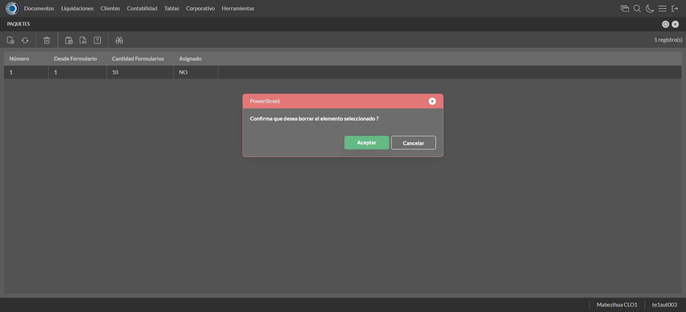 | ||||
test_015: Ingresa a pantalla Perfiles Comision |
pt1_17: 2022-12-21 12:08:33,766 - root - INFO - Abre la pantalla de Perfiles de Comisión
2022-12-21 12:08:34,435 - root - INFO - La pantalla ejecutada es Perfiles de Comisión.
2022-12-21 12:08:34,438 - root - INFO - Captura: C:\xampp\htdocs\versiones\automatizaciones\AutoPWST\ScriptAmarillo\report\img screen：20221221_12_08_34.png
2022-12-21 12:08:45,159 - root - INFO - Se presiona el boton 'Nuevo', para crear un nuevo registro.
|

|
||||
test_016: Agregar Perfiles Comision |
pt1_18: 2022-12-21 12:08:45,809 - root - INFO - Se abrio la pantalla para el ingreso de un registro nuevo.
2022-12-21 12:08:45,955 - root - INFO - El campo 'Codigo' si se encuentra visible.
2022-12-21 12:08:46,080 - root - INFO - El campo 'Descrición' si se encuentra visible.
2022-12-21 12:08:46,209 - root - INFO - El campo 'Porcentaje Global' si se encuentra visible.
2022-12-21 12:08:46,334 - root - INFO - El campo 'Con impuesto' si se encuentra visible.
2022-12-21 12:08:46,457 - root - INFO - El campo 'Comisión Repartidor' si se encuentra visible.
2022-12-21 12:08:46,642 - root - INFO - Ingresa el codigo del nuevo registro
2022-12-21 12:08:46,885 - root - INFO - Ingresa la descripción del nuevo registro
2022-12-21 12:08:47,101 - root - INFO - Ingresa el Porcentaje Global del nuevo registro
2022-12-21 12:08:47,297 - root - INFO - Se hizó click en el Checkbox Con impuesto
2022-12-21 12:08:47,518 - root - INFO - Se hizó click en el checkbox Comisión Repartidor
2022-12-21 12:08:48,530 - root - INFO - Captura: C:\xampp\htdocs\versiones\automatizaciones\AutoPWST\ScriptAmarillo\report\img screen：20221221_12_08_48.png
2022-12-21 12:08:48,891 - root - INFO - Se hace el cambio a la pestaña Topes para continuar con el registro nuevo
2022-12-21 12:08:49,600 - root - INFO - Se presiona el boton 'Nuevo', para crear un nuevo registro de Topes.
2022-12-21 12:08:50,262 - root - INFO - El campo 'Moneda' si se encuentra visible.
2022-12-21 12:08:50,388 - root - INFO - El campo 'Tope' si se encuentra visible.
2022-12-21 12:08:50,516 - root - INFO - El campo 'Porcentaje' si se encuentra visible.
2022-12-21 12:08:51,724 - root - INFO - Se dió doble click en el registro de Moneda.
2022-12-21 12:08:52,032 - root - INFO - Ingresa el tope del nuevo registro
2022-12-21 12:08:52,259 - root - INFO - Ingresa el Porcentaje del nuevo registro
2022-12-21 12:08:52,484 - root - INFO - Se da clic en el boton Guardar; se debe crear un nuevo registro de Topes.
2022-12-21 12:08:52,804 - root - INFO - Se hace el cambio a la pestaña Cuenta Articulo para continuar con el registro nuevo
2022-12-21 12:08:53,588 - root - INFO - Se presiona el boton 'Nuevo', para crear un nuevo registro de Cuenta Articulo.
2022-12-21 12:08:54,248 - root - INFO - El campo 'Cuenta' si se encuentra visible.
2022-12-21 12:08:54,380 - root - INFO - El campo 'Artículo' si se encuentra visible.
2022-12-21 12:08:54,494 - root - INFO - El campo 'Porcentaje' si se encuentra visible.
2022-12-21 12:08:56,272 - root - INFO - Se dió doble click en el registro de Cuenta.
2022-12-21 12:08:57,871 - root - INFO - Se dió doble click en el registro de Articulo.
2022-12-21 12:08:58,177 - root - INFO - Ingresa el Porcentaje del nuevo registro
2022-12-21 12:08:58,374 - root - INFO - Se da clic en el boton Guardar; se debe crear un nuevo registro de Cuenta Articulo.
2022-12-21 12:08:58,628 - root - INFO - Se hace el cambio a la pestaña Cuentas para continuar con el registro nuevo
2022-12-21 12:08:59,386 - root - INFO - Se presiona el boton 'Nuevo', para crear un nuevo registro de Cuentas.
2022-12-21 12:09:00,056 - root - INFO - El campo 'Cuenta' si se encuentra visible.
2022-12-21 12:09:00,196 - root - INFO - El campo 'Porcentaje' si se encuentra visible.
2022-12-21 12:09:02,008 - root - INFO - Se dió doble click en el registro de Cuenta.
2022-12-21 12:09:02,315 - root - INFO - Ingresa el Porcentaje del nuevo registro
2022-12-21 12:09:02,547 - root - INFO - Se da clic en el boton Guardar; se debe crear un nuevo registro de Cuentas.
2022-12-21 12:09:02,836 - root - INFO - Se hace el cambio a la pestaña Articulos para continuar con el registro nuevo
2022-12-21 12:09:03,617 - root - INFO - Se presiona el boton 'Nuevo', para crear un nuevo registro de Articulos.
2022-12-21 12:09:04,297 - root - INFO - El campo 'Artículo' si se encuentra visible.
2022-12-21 12:09:04,419 - root - INFO - El campo 'Porcentaje' si se encuentra visible.
2022-12-21 12:09:06,157 - root - INFO - Se dió doble click en el registro de Articulo.
2022-12-21 12:09:06,448 - root - INFO - Ingresa el Porcentaje del nuevo registro
2022-12-21 12:09:06,652 - root - INFO - Se da clic en el boton Guardar; se debe crear un nuevo registro de Articulos.
2022-12-21 12:09:06,917 - root - INFO - Se hace el cambio a la pestaña Tipos de Documento para continuar con el registro nuevo
2022-12-21 12:09:07,687 - root - INFO - Se presiona el boton 'Nuevo', para crear un nuevo registro de Tipo Documento.
2022-12-21 12:09:08,360 - root - INFO - El campo 'Tipo Documento' si se encuentra visible.
2022-12-21 12:09:08,492 - root - INFO - El campo 'Origen' si se encuentra visible.
2022-12-21 12:09:08,630 - root - INFO - El campo 'Signo' si se encuentra visible.
2022-12-21 12:09:08,763 - root - INFO - El campo 'Cancelado' si se encuentra visible.
2022-12-21 12:09:09,985 - root - INFO - Se dió doble click en el registro de Tipo Documento.
2022-12-21 12:09:12,583 - root - INFO - Se dió click en la opción Backoffice.
2022-12-21 12:09:13,187 - root - INFO - Se dió click en la opción Suma.
2022-12-21 12:09:13,549 - root - INFO - Se dió click en el checkbox Cancelado.
2022-12-21 12:09:13,644 - root - INFO - Se da clic en el boton Guardar; se debe crear un nuevo registro de Tipos Documento.
2022-12-21 12:09:13,896 - root - INFO - Se da clic en el boton Guardar; se debe crear un nuevo registro.
|

|
||||
test_017: Repetir Registro Perfiles Comision |
pt1_19: 2022-12-21 12:09:14,288 - root - INFO - Se presiona el boton 'Refrescar', para crear un nuevo registro igual al anterior.
2022-12-21 12:09:14,493 - root - INFO - Se presiona el boton 'Nuevo', para crear un nuevo registro igual al anterior.
2022-12-21 12:09:15,141 - root - INFO - Se abrio la pantalla para el ingreso de un registro nuevo.
2022-12-21 12:09:15,253 - root - INFO - El campo 'Codigo' si se encuentra visible.
2022-12-21 12:09:15,365 - root - INFO - El campo 'Descrición' si se encuentra visible.
2022-12-21 12:09:15,477 - root - INFO - El campo 'Porcentaje Global' si se encuentra visible.
2022-12-21 12:09:15,586 - root - INFO - El campo 'Con impuesto' si se encuentra visible.
2022-12-21 12:09:15,688 - root - INFO - El campo 'Comisión Repartidor' si se encuentra visible.
2022-12-21 12:09:15,902 - root - INFO - Ingresa el codigo del nuevo registro
2022-12-21 12:09:16,094 - root - INFO - Ingresa la descripción del nuevo registro
2022-12-21 12:09:16,272 - root - INFO - Ingresa el Porcentaje Global del nuevo registro
2022-12-21 12:09:16,436 - root - INFO - Se hizó click en el Checkbox Con impuesto
2022-12-21 12:09:16,599 - root - INFO - Se hizó click en el checkbox Comisión Repartidor
2022-12-21 12:09:16,770 - root - INFO - Se da clic en el boton Guardar; No se debe crear un nuevo registro.
2022-12-21 12:09:17,783 - root - INFO - Captura: C:\xampp\htdocs\versiones\automatizaciones\AutoPWST\ScriptAmarillo\report\img screen：20221221_12_09_17.png
2022-12-21 12:09:18,110 - root - INFO - Se presiona el boton 'Cerrar', para cerrar el mensaje de duplicidad de llave primaria
2022-12-21 12:09:18,213 - root - INFO - Se presiona el boton 'Cerrar', para cerrar la ventana
|
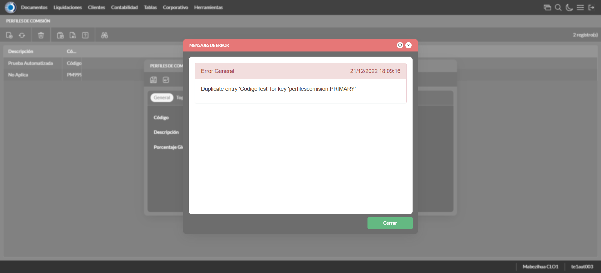 | ||||
test_018: Modifica Perfiles Comision |
pt1_20: 2022-12-21 12:09:18,306 - root - INFO - Se presiona el boton 'Refrescar', para proceder a modificar el registro.
2022-12-21 12:09:20,043 - root - INFO - Se da doble click en el registro creado, para proceder a modificarlo.
2022-12-21 12:09:20,994 - root - INFO - Se modifica el contenido del campo Descripción
2022-12-21 12:09:21,331 - root - INFO - Se modifica el contenido del campo Porcentaje Global
2022-12-21 12:09:21,549 - root - INFO - Se hizó click en el checkbox Con impuesto
2022-12-21 12:09:21,776 - root - INFO - Se hizó click en el checkbox Comisión Repartidor
2022-12-21 12:09:23,790 - root - INFO - Captura: C:\xampp\htdocs\versiones\automatizaciones\AutoPWST\ScriptAmarillo\report\img screen：20221221_12_09_23.png
2022-12-21 12:09:24,321 - root - INFO - Se da clic en el boton Guardar; se debe modificar la informacion del registro.
|

|
||||
test_019: Elimina Perfiles Comision |
pt1_21: 2022-12-21 12:09:24,696 - root - INFO - Se presiona el boton 'Refrescar', para proceder a eliminar el registro.
2022-12-21 12:09:27,035 - root - INFO - Se da clic en el registro creado, para proceder a eliminarlo.
2022-12-21 12:09:28,207 - root - INFO - Se da clic en la ventana de tope, para proceder a eliminarlo.
2022-12-21 12:09:29,410 - root - INFO - Se da clic en el tope creado, para proceder a eliminarlo.
2022-12-21 12:09:30,311 - root - INFO - Se da clic en la ventana cuenta/articulo, para proceder a eliminarlo.
2022-12-21 12:09:31,552 - root - INFO - Se da clic en la cuenta/articulo creado, para proceder a eliminarlo.
2022-12-21 12:09:32,490 - root - INFO - Se da clic en la ventana cuentas, para proceder a eliminarlo.
2022-12-21 12:09:33,713 - root - INFO - Se da clic en la cuenta creado, para proceder a eliminarlo.
2022-12-21 12:09:34,567 - root - INFO - Se da clic en la cuenta/articulo creado, para proceder a eliminarlo.
2022-12-21 12:09:35,765 - root - INFO - Se da clic en el articulo creado, para proceder a eliminarlo.
2022-12-21 12:09:36,657 - root - INFO - Se da clic en la ventana tipo documento, para proceder a eliminarlo.
2022-12-21 12:09:37,861 - root - INFO - Se da clic en el tipo de documento creado, para proceder a eliminarlo.
2022-12-21 12:09:38,294 - root - INFO - Se da clic en el boton Guardar; se debe crear un nuevo registro.
2022-12-21 12:09:38,930 - root - INFO - Se da clic en el registro creado, para proceder a eliminarlo.
2022-12-21 12:09:39,158 - root - INFO - Se presiona el boton 'Eliminar', para eliminar el registro.
2022-12-21 12:09:39,161 - root - INFO - Captura: C:\xampp\htdocs\versiones\automatizaciones\AutoPWST\ScriptAmarillo\report\img screen：20221221_12_09_39.png
2022-12-21 12:09:39,531 - root - INFO - Se confirma el eliminado del registro
2022-12-21 12:09:39,728 - root - INFO - Se presiona el boton 'Refrescar', para verificar que el registro se ha eliminado.
2022-12-21 12:09:39,959 - root - INFO - Se presiona el boton 'Cerrar', para cerrar la pantalla de Perfiles de Comisión.
|
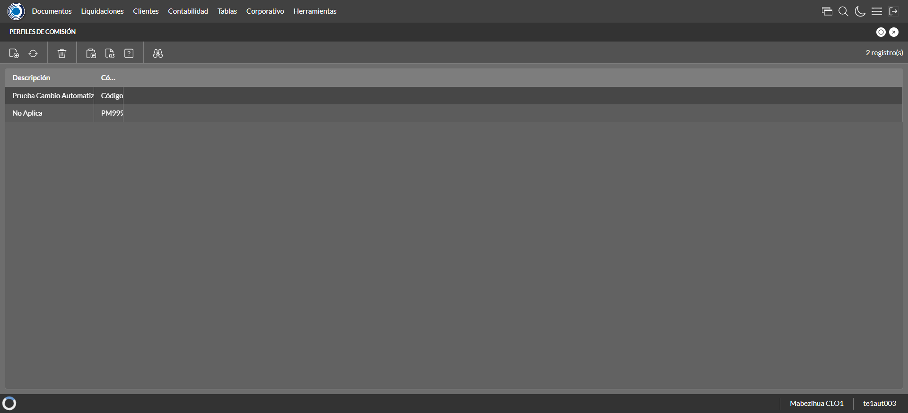 | ||||
test_020: Ingresa a pantalla Politicas de Venta |
pt1_22: 2022-12-21 12:09:41,227 - root - INFO - Abre la pantalla de Politicas de Venta
2022-12-21 12:09:42,137 - root - INFO - La pantalla ejecutada es Politicas de Venta
2022-12-21 12:09:43,147 - root - INFO - Captura: C:\xampp\htdocs\versiones\automatizaciones\AutoPWST\ScriptAmarillo\report\img screen：20221221_12_09_43.png
2022-12-21 12:09:53,714 - root - INFO - Se presiona el boton 'Nuevo', para crear un nuevo registro.
|
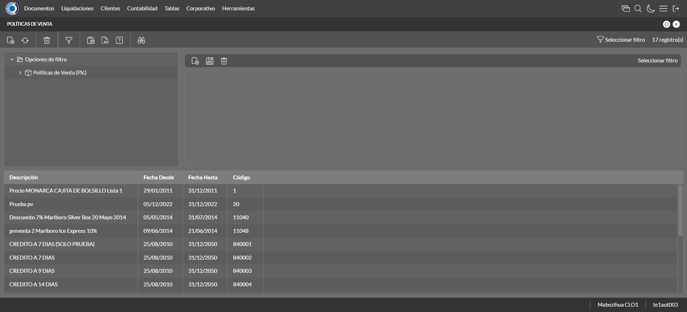 | ||||
test_021: Agregar Perfiles Politicas de Venta |
pt1_23: 2022-12-21 12:09:54,443 - root - INFO - Se abrio la pantalla para el ingreso de un registro nuevo.
2022-12-21 12:09:54,516 - root - INFO - El campo 'Codigo' si se encuentra visible.
2022-12-21 12:09:54,629 - root - INFO - El campo 'Codigo Alternativo' si se encuentra visible.
2022-12-21 12:09:54,735 - root - INFO - El campo 'Descrición' si se encuentra visible.
2022-12-21 12:09:54,848 - root - INFO - El campo 'Moneda' si se encuentra visible.
2022-12-21 12:09:54,961 - root - INFO - El campo 'Aplicable en' si se encuentra visible.
2022-12-21 12:09:55,074 - root - INFO - El campo 'Activa' si se encuentra visible.
2022-12-21 12:09:55,186 - root - INFO - El campo 'Aplicación Global' si se encuentra visible.
2022-12-21 12:09:55,365 - root - INFO - Ingresa el codigo del nuevo registro
2022-12-21 12:09:55,615 - root - INFO - Ingresa el codigo alternativo del nuevo registro
2022-12-21 12:09:55,954 - root - INFO - Ingresa la descripción del nuevo registro
2022-12-21 12:09:57,187 - root - INFO - Se dió doble click en el registro de Moneda.
2022-12-21 12:09:57,674 - root - INFO - Se dió click en la opción BackOffice y Mobile.
2022-12-21 12:09:58,898 - root - INFO - Se dió click en el checkbox Activa.
2022-12-21 12:09:59,107 - root - INFO - Se dió click en el checkbox Aplicación Global.
2022-12-21 12:09:59,322 - root - INFO - Se hace el cambio a la pestaña Por Articulo para continuar con el registro nuevo
2022-12-21 12:10:00,078 - root - INFO - Se presiona el boton 'Nuevo', para crear un nuevo registro de Por Articulo.
2022-12-21 12:10:00,903 - root - INFO - El campo 'Artículo' si se encuentra visible.
2022-12-21 12:10:00,965 - root - INFO - El campo 'Artículo a Bonificar' si se encuentra visible.
2022-12-21 12:10:01,032 - root - INFO - El campo 'Cantidad a Bonificar(Packing)' si se encuentra visible.
2022-12-21 12:10:01,103 - root - INFO - El campo 'Cantidad en Bonificación(Unidad)' si se encuentra visible.
2022-12-21 12:10:01,171 - root - INFO - El campo 'Tope Descuento 1' si se encuentra visible.
2022-12-21 12:10:01,238 - root - INFO - El campo 'Tope Descuento 2' si se encuentra visible.
2022-12-21 12:10:01,429 - root - INFO - Ingresa el Articulo del nuevo registro
2022-12-21 12:10:01,588 - root - INFO - Ingresa el Articulo a bonificar del nuevo registro
2022-12-21 12:10:01,780 - root - INFO - Ingresa la Cantidad a Bonificar del nuevo registro
2022-12-21 12:10:01,967 - root - INFO - Ingresa la Cantidad en Bonificación del nuevo registro
2022-12-21 12:10:02,185 - root - INFO - Ingresa el Tope Descuento 1 del nuevo registro
2022-12-21 12:10:02,341 - root - INFO - Ingresa el Tope Descuento 2 del nuevo registro
2022-12-21 12:10:03,356 - root - INFO - Captura: C:\xampp\htdocs\versiones\automatizaciones\AutoPWST\ScriptAmarillo\report\img screen：20221221_12_10_03.png
2022-12-21 12:10:03,706 - root - INFO - Se presiona el boton 'Guardar', para guardar el registro de Por Articulo.
2022-12-21 12:10:04,012 - root - INFO - Se da clic en el boton Guardar; se debe crear un nuevo registro.
|

|
||||
test_022: Repetir Registro Politicas de Venta |
pt1_24: 2022-12-21 12:10:04,486 - root - INFO - Se presiona el boton 'Refrescar', para crear un nuevo registro igual al anterior.
2022-12-21 12:10:04,763 - root - INFO - Se presiona el boton 'Nuevo', para crear un nuevo registro igual al anterior.
2022-12-21 12:10:05,571 - root - INFO - Se abrio la pantalla para el ingreso de un registro nuevo.
2022-12-21 12:10:05,674 - root - INFO - Ingresa el codigo del nuevo registro
2022-12-21 12:10:05,815 - root - INFO - Ingresa el codigo alternativo del nuevo registro
2022-12-21 12:10:06,045 - root - INFO - Ingresa la descripción del nuevo registro
2022-12-21 12:10:07,175 - root - INFO - Se dió doble click en el registro de Moneda.
2022-12-21 12:10:07,650 - root - INFO - Se dió click en la opción BackOffice y Mobile.
2022-12-21 12:10:07,864 - root - INFO - Se dió click en el checkbox Activa.
2022-12-21 12:10:08,081 - root - INFO - Se dió click en el checkbox Aplicación Global.
2022-12-21 12:10:08,336 - root - INFO - Se da clic en el boton Guardar; No se debe crear un nuevo registro.
2022-12-21 12:10:09,347 - root - INFO - Captura: C:\xampp\htdocs\versiones\automatizaciones\AutoPWST\ScriptAmarillo\report\img screen：20221221_12_10_09.png
2022-12-21 12:10:09,747 - root - INFO - Se presiona el boton 'Cerrar', para cerrar el mensaje de duplicidad de llave primaria
2022-12-21 12:10:09,878 - root - INFO - Se presiona el boton 'Cerrar', para cerrar la ventana
|
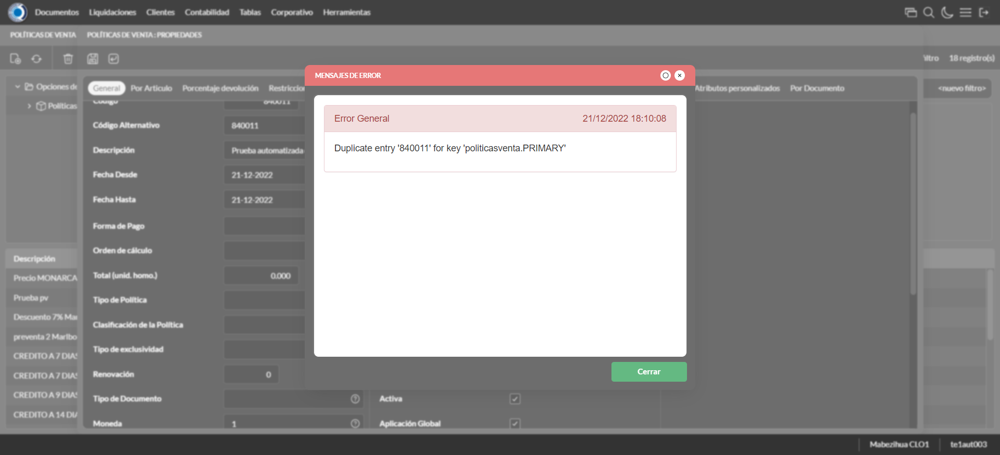 | ||||
test_023: Modifica Politicas de Venta |
pt1_25: 2022-12-21 12:10:10,019 - root - INFO - Se presiona el boton 'Refrescar', para proceder a modificar el registro.
2022-12-21 12:10:11,778 - root - INFO - Se da clic en el registro creado, para proceder a modificarlo.
2022-12-21 12:10:12,614 - root - INFO - Se modifica el contenido del campo Codigo Alternativo
2022-12-21 12:10:12,840 - root - INFO - Se modifica el contenido del campo Descripcion
2022-12-21 12:10:12,929 - root - INFO - Se dió click en el checkbox Aplicación Global.
2022-12-21 12:10:13,076 - root - INFO - Se hace el cambio a la pestaña Por Articulo para continuar con la modificacion del registro
2022-12-21 12:10:14,364 - root - INFO - Se da clic en el registro de Por Articulo, para proceder a modificarlo.
2022-12-21 12:10:15,353 - root - INFO - Se modifica el contenido del campo Articulo
2022-12-21 12:10:15,625 - root - INFO - Se modifica el contenido del campo Articulo a Bonificar
2022-12-21 12:10:15,867 - root - INFO - Se modifica el contenido del campo Cantidad a Bonificar
2022-12-21 12:10:16,100 - root - INFO - Se modifica el contenido del campo Cantidad en Bonificación
2022-12-21 12:10:17,114 - root - INFO - Captura: C:\xampp\htdocs\versiones\automatizaciones\AutoPWST\ScriptAmarillo\report\img screen：20221221_12_10_17.png
2022-12-21 12:10:17,663 - root - INFO - Se presiona el boton 'Guardar', para guardar la modificación del registro de Por Articulo.
2022-12-21 12:10:17,881 - root - INFO - Se da clic en el boton Guardar; se debe modificar la informacion del registro.
|
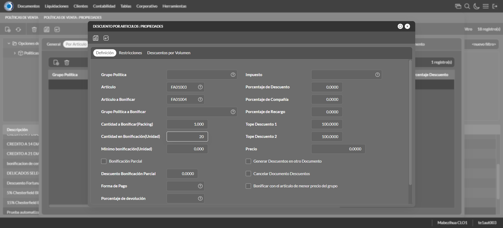 | ||||
test_024: Elimina Politicas de Venta |
pt1_26: 2022-12-21 12:10:18,237 - root - INFO - Se presiona el boton 'Refrescar', para proceder a eliminar el registro.
2022-12-21 12:10:20,778 - root - INFO - Se da clic en el registro creado, para proceder a eliminarlo.
2022-12-21 12:10:21,543 - root - INFO - Se hace el cambio a la pestaña Por Articulo para continuar con la eliminación del registro
2022-12-21 12:10:22,742 - root - INFO - Se da clic en el registro Por Articulo, para proceder a eliminarlo.
2022-12-21 12:10:23,003 - root - INFO - Se presiona el boton 'Eliminar', para eliminar el registro de Por Articulo.
2022-12-21 12:10:23,345 - root - INFO - Se da clic en el boton Guardar; se debe modificar la informacion del registro.
2022-12-21 12:10:24,002 - root - INFO - Se da clic en el registro creado, para proceder a eliminarlo.
2022-12-21 12:10:25,270 - root - INFO - Se presiona el boton 'Eliminar', para eliminar el registro.
2022-12-21 12:10:25,272 - root - INFO - Captura: C:\xampp\htdocs\versiones\automatizaciones\AutoPWST\ScriptAmarillo\report\img screen：20221221_12_10_25.png
2022-12-21 12:10:25,741 - root - INFO - Se confirma el eliminado del registro
2022-12-21 12:10:25,981 - root - INFO - Se presiona el boton 'Refrescar', para verificar si el registro ha sido eliminado.
2022-12-21 12:10:26,177 - root - INFO - Se presiona el boton 'Cerrar', para cerrar la pantalla de Politicas de Venta.
|
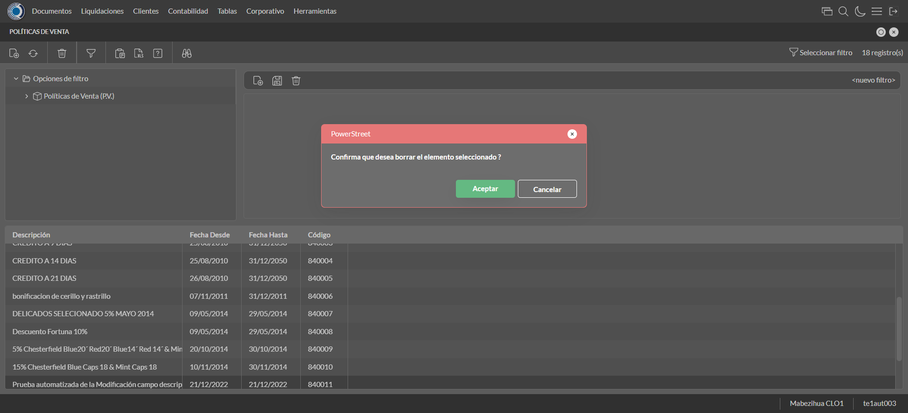 | ||||
test_025: Ingresa a pantalla Modelos de Liquidacion |
pt1_27: 2022-12-21 12:10:26,380 - root - INFO - El nombre de la pantalla para la automatización
2022-12-21 12:10:27,949 - root - INFO - La pantalla ejecutada es GRUPO DE POLÍTICAS AD HOC.
2022-12-21 12:10:27,952 - root - INFO - Captura: C:\xampp\htdocs\versiones\automatizaciones\AutoPWST\ScriptAmarillo\report\img screen：20221221_12_10_27.png
2022-12-21 12:10:28,681 - root - INFO - Se presiona el boton 'Nuevo', para crear un nuevo registro.
|

|
||||
test_026: Agregar Perfiles Modelos de Liquidacion |
pt1_28: 2022-12-21 12:10:29,342 - root - INFO - Se abrio la pantalla para el ingreso de un registro nuevo.
2022-12-21 12:10:29,471 - root - INFO - El campo 'Codigo' si se encuentra visible.
2022-12-21 12:10:29,601 - root - INFO - El campo 'Código Alternativo' si se encuentra visible.
2022-12-21 12:10:29,741 - root - INFO - El campo 'Descrición' si se encuentra visible.
2022-12-21 12:10:29,936 - root - INFO - Ingresa el codigo del nuevo registro
2022-12-21 12:10:30,200 - root - INFO - Ingresa el codigo alternativo del nuevo registro
2022-12-21 12:10:30,471 - root - INFO - Ingresa la descripción del nuevo registro
2022-12-21 12:10:32,475 - root - INFO - Captura: C:\xampp\htdocs\versiones\automatizaciones\AutoPWST\ScriptAmarillo\report\img screen：20221221_12_10_32.png
2022-12-21 12:10:33,140 - root - INFO - Se da clic en el boton Guardar; se debe crear un nuevo registro.
|

|
||||
test_027: Repetir Registro Modelos de Liquidacion |
pt1_29: 2022-12-21 12:10:33,384 - root - INFO - Se presiona el boton 'Refrescar', para crear un nuevo registro igual al anterior.
2022-12-21 12:10:33,587 - root - INFO - Se presiona el boton 'Nuevo', para crear un nuevo registro igual al anterior.
2022-12-21 12:10:34,233 - root - INFO - Se abrio la pantalla para el ingreso de un registro nuevo.
2022-12-21 12:10:34,344 - root - INFO - El campo 'Codigo' si se encuentra visible.
2022-12-21 12:10:34,454 - root - INFO - El campo 'Código Alternativo' si se encuentra visible.
2022-12-21 12:10:34,566 - root - INFO - El campo 'Descrición' si se encuentra visible.
2022-12-21 12:10:34,744 - root - INFO - Ingresa el codigo del nuevo registro
2022-12-21 12:10:35,029 - root - INFO - Ingresa el codigo alternativo del nuevo registro
2022-12-21 12:10:35,275 - root - INFO - Ingresa la descripción del nuevo registro
2022-12-21 12:10:35,461 - root - INFO - Se da clic en el boton Guardar; se debe crear un nuevo registro.
2022-12-21 12:10:37,467 - root - INFO - Captura: C:\xampp\htdocs\versiones\automatizaciones\AutoPWST\ScriptAmarillo\report\img screen：20221221_12_10_37.png
2022-12-21 12:10:37,832 - root - INFO - Se presiona el boton 'Cerrar', para cerrar el mensaje de duplicidad de llave primaria
2022-12-21 12:10:37,930 - root - INFO - Se presiona el boton 'Cerrar', para cerrar la ventana
|
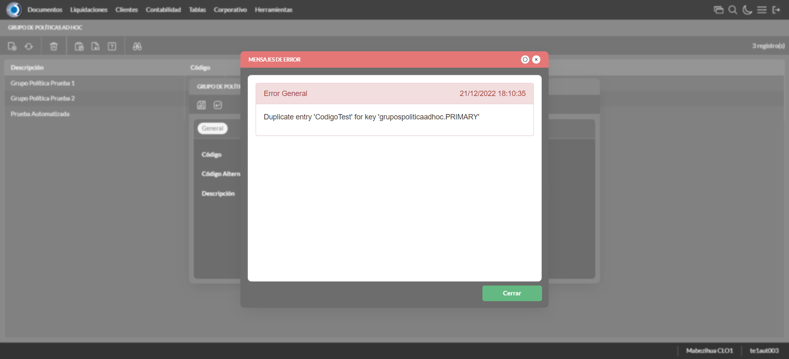 | ||||
test_028: Modifica Modelos de Liquidacion |
pt1_30: 2022-12-21 12:10:38,027 - root - INFO - Se presiona el boton 'Refrescar', para crear un nuevo registro igual al anterior.
2022-12-21 12:10:39,741 - root - INFO - Se da clic en el registro creado, para proceder a modificarlo.
2022-12-21 12:10:40,455 - root - INFO - Ingresa el codigo alternativo del nuevo registro
2022-12-21 12:10:40,663 - root - INFO - Se modifica el contenido del campo Descripcion
2022-12-21 12:10:42,675 - root - INFO - Captura: C:\xampp\htdocs\versiones\automatizaciones\AutoPWST\ScriptAmarillo\report\img screen：20221221_12_10_42.png
2022-12-21 12:10:43,047 - root - INFO - Se da clic en el boton Guardar; se debe modificar la informacion del registro.
|

|
||||
test_029: Elimina Modelos de Liquidacion |
pt1_31: 2022-12-21 12:10:43,221 - root - INFO - Se presiona el boton 'Refrescar', para proceder a eliminar el registro.
2022-12-21 12:10:44,879 - root - INFO - Se da clic en el registro creado, para proceder a eliminarlo.
2022-12-21 12:10:45,039 - root - INFO - Se presiona el boton 'Eliminar', para eliminar el registro.
2022-12-21 12:10:47,055 - root - INFO - Captura: C:\xampp\htdocs\versiones\automatizaciones\AutoPWST\ScriptAmarillo\report\img screen：20221221_12_10_47.png
2022-12-21 12:10:47,556 - root - INFO - Se confirma el eliminado del registro
2022-12-21 12:10:47,825 - root - INFO - Se presiona el boton 'Refrescar', para crear un nuevo registro igual al anterior.
2022-12-21 12:10:47,961 - root - INFO - Se presiona el boton 'Cerrar', para cerrar la pantalla de Categorias Fiscales.
|
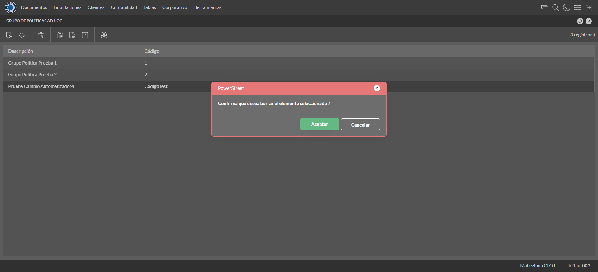 | ||||
test_030: Ingresa a pantalla Politicas AdHoc |
pt1_32: 2022-12-21 12:10:48,254 - root - INFO - El nombre de la pantalla para la automatización
2022-12-21 12:10:49,839 - root - INFO - La pantalla ejecutada es GRUPO DE POLÍTICAS AD HOC.
2022-12-21 12:10:49,841 - root - INFO - Captura: C:\xampp\htdocs\versiones\automatizaciones\AutoPWST\ScriptAmarillo\report\img screen：20221221_12_10_49.png
2022-12-21 12:10:50,300 - root - INFO - Se presiona el boton 'Nuevo', para crear un nuevo registro.
|

|
||||
test_031: Agregar Perfiles Politicas AdHoc |
pt1_33: 2022-12-21 12:10:50,956 - root - INFO - Se abrio la pantalla para el ingreso de un registro nuevo.
2022-12-21 12:10:51,082 - root - INFO - El campo 'Codigo' si se encuentra visible.
2022-12-21 12:10:51,202 - root - INFO - El campo 'Código Alternativo' si se encuentra visible.
2022-12-21 12:10:51,332 - root - INFO - El campo 'Descrición' si se encuentra visible.
2022-12-21 12:10:51,545 - root - INFO - Ingresa el codigo del nuevo registro
2022-12-21 12:10:51,811 - root - INFO - Ingresa el codigo alternativo del nuevo registro
2022-12-21 12:10:52,128 - root - INFO - Ingresa la descripción del nuevo registro
2022-12-21 12:10:54,140 - root - INFO - Captura: C:\xampp\htdocs\versiones\automatizaciones\AutoPWST\ScriptAmarillo\report\img screen：20221221_12_10_54.png
2022-12-21 12:10:54,495 - root - INFO - Se da clic en el boton Guardar; se debe crear un nuevo registro.
|

|
||||
test_032: Repetir Registro Politicas AdHoc |
pt1_34: 2022-12-21 12:10:54,746 - root - INFO - Se presiona el boton 'Refrescar', para crear un nuevo registro igual al anterior.
2022-12-21 12:10:54,867 - root - INFO - Se presiona el boton 'Nuevo', para crear un nuevo registro igual al anterior.
2022-12-21 12:10:55,512 - root - INFO - Se abrio la pantalla para el ingreso de un registro nuevo.
2022-12-21 12:10:55,633 - root - INFO - El campo 'Codigo' si se encuentra visible.
2022-12-21 12:10:55,763 - root - INFO - El campo 'Código Alternativo' si se encuentra visible.
2022-12-21 12:10:55,964 - root - INFO - El campo 'Descrición' si se encuentra visible.
2022-12-21 12:10:56,042 - root - INFO - Ingresa el codigo del nuevo registro
2022-12-21 12:10:56,262 - root - INFO - Ingresa el codigo alternativo del nuevo registro
2022-12-21 12:10:56,589 - root - INFO - Ingresa la descripción del nuevo registro
2022-12-21 12:10:56,809 - root - INFO - Se da clic en el boton Guardar; se debe crear un nuevo registro.
2022-12-21 12:10:58,820 - root - INFO - Captura: C:\xampp\htdocs\versiones\automatizaciones\AutoPWST\ScriptAmarillo\report\img screen：20221221_12_10_58.png
2022-12-21 12:10:59,390 - root - INFO - Se presiona el boton 'Cerrar', para cerrar el mensaje de duplicidad de llave primaria
2022-12-21 12:10:59,604 - root - INFO - Se presiona el boton 'Cerrar', para cerrar la ventana
|
|||||
test_033: Modifica Politicas AdHoc |
pt1_35: 2022-12-21 12:10:59,789 - root - INFO - Se presiona el boton 'Refrescar', para crear un nuevo registro igual al anterior.
2022-12-21 12:11:02,165 - root - INFO - Se da clic en el registro creado, para proceder a modificarlo.
2022-12-21 12:11:03,098 - root - INFO - Ingresa el codigo alternativo del nuevo registro
2022-12-21 12:11:03,484 - root - INFO - Se modifica el contenido del campo Descripcion
2022-12-21 12:11:05,489 - root - INFO - Captura: C:\xampp\htdocs\versiones\automatizaciones\AutoPWST\ScriptAmarillo\report\img screen：20221221_12_11_05.png
2022-12-21 12:11:05,998 - root - INFO - Se da clic en el boton Guardar; se debe modificar la informacion del registro.
|
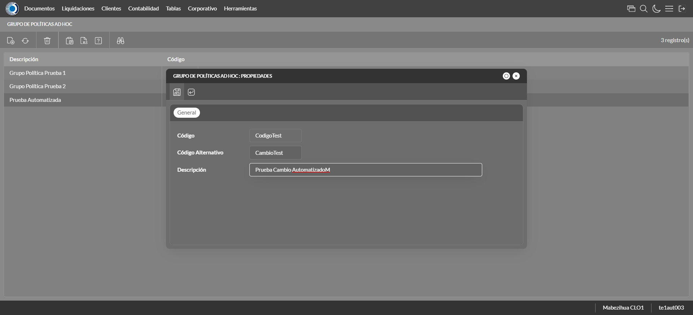 | ||||
test_034: Elimina Politicas AdHoc |
pt1_36: 2022-12-21 12:11:06,201 - root - INFO - Se presiona el boton 'Refrescar', para proceder a eliminar el registro.
2022-12-21 12:11:07,893 - root - INFO - Se da clic en el registro creado, para proceder a eliminarlo.
2022-12-21 12:11:08,122 - root - INFO - Se presiona el boton 'Eliminar', para eliminar el registro.
2022-12-21 12:11:10,135 - root - INFO - Captura: C:\xampp\htdocs\versiones\automatizaciones\AutoPWST\ScriptAmarillo\report\img screen：20221221_12_11_10.png
2022-12-21 12:11:10,464 - root - INFO - Se confirma el eliminado del registro
2022-12-21 12:11:10,619 - root - INFO - Se presiona el boton 'Refrescar', para crear un nuevo registro igual al anterior.
2022-12-21 12:11:10,745 - root - INFO - Se presiona el boton 'Cerrar', para cerrar la pantalla de Categorias Fiscales.
|

|
||||
test_035: Ingresa a pantalla Programacion de Politicas |
pt1_37: 2022-12-21 12:11:11,904 - root - INFO - Abre la pantalla de Programación de Politicas de Venta
2022-12-21 12:11:12,504 - root - INFO - La pantalla ejecutada es Programación de Politicas de Venta.
2022-12-21 12:11:12,506 - root - INFO - Captura: C:\xampp\htdocs\versiones\automatizaciones\AutoPWST\ScriptAmarillo\report\img screen：20221221_12_11_12.png
2022-12-21 12:11:23,114 - root - INFO - Se presiona el boton 'Nuevo', para crear un nuevo registro.
|

|
||||
test_036: Agregar Perfiles Programacion de Politicas |
pt1_38: 2022-12-21 12:11:23,802 - root - INFO - Se abrio la pantalla para el ingreso de un registro nuevo.
2022-12-21 12:11:23,916 - root - INFO - El campo 'Codigo' si se encuentra visible.
2022-12-21 12:11:24,028 - root - INFO - El campo 'Descrición' si se encuentra visible.
2022-12-21 12:11:24,163 - root - INFO - El campo 'Ejecutar Cuando' si se encuentra visible.
2022-12-21 12:11:24,357 - root - INFO - El campo 'Asignar a' si se encuentra visible.
2022-12-21 12:11:24,472 - root - INFO - El campo 'Aplicar filtros por' si se encuentra visible.
2022-12-21 12:11:24,582 - root - INFO - El campo 'Política de venta' si se encuentra visible.
2022-12-21 12:11:24,693 - root - INFO - El campo 'Observaciones' si se encuentra visible.
2022-12-21 12:11:24,804 - root - INFO - El campo 'Ejecutar generar' si se encuentra visible.
2022-12-21 12:11:24,918 - root - INFO - El campo 'Ejecutar eliminar' si se encuentra visible.
2022-12-21 12:11:25,025 - root - INFO - El campo 'Activa' si se encuentra visible.
2022-12-21 12:11:25,183 - root - INFO - Ingresa el codigo del nuevo registro
2022-12-21 12:11:25,419 - root - INFO - Ingresa la descripción del nuevo registro
2022-12-21 12:11:28,781 - root - INFO - Ingresa la observacion del nuevo registro
2022-12-21 12:11:29,087 - root - INFO - Hizo click en el checkbox
2022-12-21 12:11:29,324 - root - INFO - Hizo click en el checkbox
2022-12-21 12:11:29,575 - root - INFO - Hizo click en el checkbox
2022-12-21 12:11:30,590 - root - INFO - Captura: C:\xampp\htdocs\versiones\automatizaciones\AutoPWST\ScriptAmarillo\report\img screen：20221221_12_11_30.png
2022-12-21 12:11:31,108 - root - INFO - Se da clic en el boton Guardar; se debe crear un nuevo registro.
|

|
||||
test_037: Repetir Registro Programacion de Politicas |
pt1_39: 2022-12-21 12:11:31,365 - root - INFO - Se presiona el boton 'Refrescar', para crear un nuevo registro igual al anterior.
2022-12-21 12:11:31,482 - root - INFO - Se presiona el boton 'Nuevo', para crear un nuevo registro igual al anterior.
2022-12-21 12:11:32,132 - root - INFO - Se abrio la pantalla para el ingreso de un registro nuevo.
2022-12-21 12:11:32,251 - root - INFO - El campo 'Codigo' si se encuentra visible.
2022-12-21 12:11:32,364 - root - INFO - El campo 'Descrición' si se encuentra visible.
2022-12-21 12:11:32,475 - root - INFO - El campo 'Ejecutar Cuando' si se encuentra visible.
2022-12-21 12:11:32,605 - root - INFO - El campo 'Asignar a' si se encuentra visible.
2022-12-21 12:11:32,736 - root - INFO - El campo 'Aplicar filtros por' si se encuentra visible.
2022-12-21 12:11:32,859 - root - INFO - El campo 'Política de venta' si se encuentra visible.
2022-12-21 12:11:32,981 - root - INFO - El campo 'Observaciones' si se encuentra visible.
2022-12-21 12:11:33,101 - root - INFO - El campo 'Ejecutar generar' si se encuentra visible.
2022-12-21 12:11:33,222 - root - INFO - El campo 'Ejecutar eliminar' si se encuentra visible.
2022-12-21 12:11:33,370 - root - INFO - El campo 'Activa' si se encuentra visible.
2022-12-21 12:11:33,550 - root - INFO - Ingresa el codigo del nuevo registro
2022-12-21 12:11:33,691 - root - INFO - Ingresa la descripción del nuevo registro
2022-12-21 12:11:37,169 - root - INFO - Ingresa la observacion del nuevo registro
2022-12-21 12:11:37,337 - root - INFO - Hizo click en el checkbox
2022-12-21 12:11:37,558 - root - INFO - Hizo click en el checkbox
2022-12-21 12:11:37,791 - root - INFO - Hizo click en el checkbox
2022-12-21 12:11:38,805 - root - INFO - Captura: C:\xampp\htdocs\versiones\automatizaciones\AutoPWST\ScriptAmarillo\report\img screen：20221221_12_11_38.png
2022-12-21 12:11:39,129 - root - INFO - Se da clic en el boton Guardar; NO se debe crear un nuevo registro.
2022-12-21 12:11:40,144 - root - INFO - Captura: C:\xampp\htdocs\versiones\automatizaciones\AutoPWST\ScriptAmarillo\report\img screen：20221221_12_11_40.png
2022-12-21 12:11:40,511 - root - INFO - Se presiona el boton 'Cerrar', para cerrar el mensaje de duplicidad de llave primaria
2022-12-21 12:11:40,611 - root - INFO - Se presiona el boton 'Cerrar', para cerrar la ventana
|
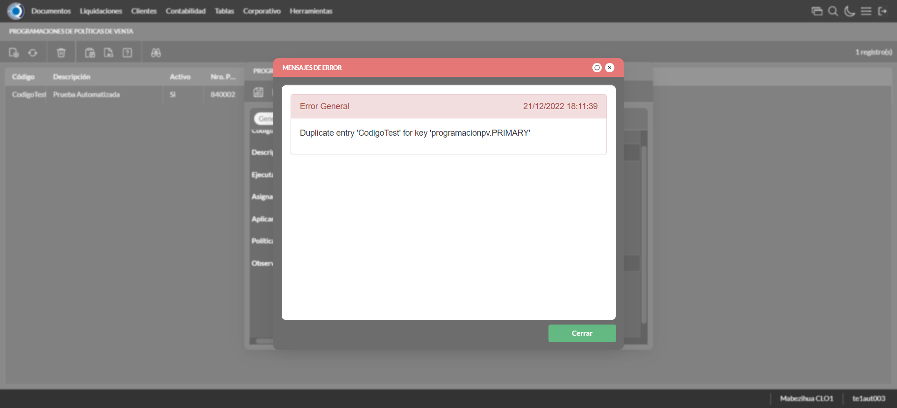 | ||||
test_038: Modifica Programacion de Politicas |
pt1_40: 2022-12-21 12:11:40,717 - root - INFO - Se presiona el boton 'Refrescar', para crear un nuevo registro igual al anterior.
2022-12-21 12:11:42,451 - root - INFO - Se da clic en el registro creado, para proceder a modificarlo.
2022-12-21 12:11:43,392 - root - INFO - Se modifica el contenido del campo Descripcion
2022-12-21 12:11:46,951 - root - INFO - Ingresa la observacion del nuevo registro
2022-12-21 12:11:47,174 - root - INFO - Hizo click en el checkbox
2022-12-21 12:11:47,387 - root - INFO - Hizo click en el checkbox
2022-12-21 12:11:47,596 - root - INFO - Hizo click en el checkbox
2022-12-21 12:11:48,613 - root - INFO - Captura: C:\xampp\htdocs\versiones\automatizaciones\AutoPWST\ScriptAmarillo\report\img screen：20221221_12_11_48.png
2022-12-21 12:11:49,012 - root - INFO - Se da clic en el boton Guardar; se debe modificar la informacion del registro.
|

|
||||
test_039: Elimina Programacion de Politicas |
pt1_41: 2022-12-21 12:11:49,290 - root - INFO - Se presiona el boton 'Refrescar', para proceder a eliminar el registro.
2022-12-21 12:11:51,021 - root - INFO - Se da clic en el registro creado, para proceder a modificarlo.
2022-12-21 12:11:52,241 - root - INFO - Se presiona el boton 'Eliminar', para eliminar el registro.
2022-12-21 12:11:52,244 - root - INFO - Captura: C:\xampp\htdocs\versiones\automatizaciones\AutoPWST\ScriptAmarillo\report\img screen：20221221_12_11_52.png
2022-12-21 12:11:52,600 - root - INFO - Se confirma el eliminado del registro
2022-12-21 12:11:52,792 - root - INFO - Se presiona el boton 'Refrescar', para crear un nuevo registro igual al anterior.
2022-12-21 12:11:53,008 - root - INFO - Se presiona el boton 'Cerrar', para cerrar la pantalla de Categorias Fiscales.
|

|
||||
test_040: Ingresa a pantalla Instancias Encuestas |
pt1_42: 2022-12-21 12:11:54,143 - root - INFO - Abre la pantalla de Instancias Encuestas
2022-12-21 12:11:54,799 - root - INFO - La pantalla ejecutada es Instancias Encuestas.
2022-12-21 12:11:54,802 - root - INFO - Captura: C:\xampp\htdocs\versiones\automatizaciones\AutoPWST\ScriptAmarillo\report\img screen：20221221_12_11_54.png
2022-12-21 12:11:55,175 - root - INFO - Se presiona el boton 'Refrescar', para crear un nuevo registro igual al anterior.
|

|
||||
test_041: Agregar Perfiles Instancias Encuestas |
pt1_43: 2022-12-21 12:12:17,811 - root - INFO - Se presiona el boton 'Nuevo', para crear un nuevo registro.
2022-12-21 12:12:18,478 - root - INFO - Se abrio la pantalla para el ingreso de un registro nuevo.
2022-12-21 12:12:18,624 - root - INFO - El campo 'Codigo' si se encuentra visible.
2022-12-21 12:12:18,764 - root - INFO - El campo 'Descrición' si se encuentra visible.
2022-12-21 12:12:18,898 - root - INFO - El campo 'Desde Fecha' si se encuentra visible.
2022-12-21 12:12:19,146 - root - INFO - El campo 'Hasta Fecha' si se encuentra visible.
2022-12-21 12:12:19,214 - root - INFO - El campo 'Fecha tope modificación' si se encuentra visible.
2022-12-21 12:12:19,334 - root - INFO - El campo 'Grupo artículos' si se encuentra visible.
2022-12-21 12:12:19,466 - root - INFO - El campo 'Frecuencia' si se encuentra visible.
2022-12-21 12:12:19,595 - root - INFO - El campo 'Grupo entidades multipropósito' si se encuentra visible.
2022-12-21 12:12:19,723 - root - INFO - El campo 'Obligatoria' si se encuentra visible.
2022-12-21 12:12:19,844 - root - INFO - El campo 'Solicitar motivo de no encuesta' si se encuentra visible.
2022-12-21 12:12:19,965 - root - INFO - El campo 'Agrupar tipos de encuesta por modo de respuestas' si se encuentra visible.
2022-12-21 12:12:20,159 - root - INFO - Ingresa el codigo del nuevo registro
2022-12-21 12:12:20,517 - root - INFO - Ingresa la descripción del nuevo registro
2022-12-21 12:12:26,360 - root - INFO - Captura: C:\xampp\htdocs\versiones\automatizaciones\AutoPWST\ScriptAmarillo\report\img screen：20221221_12_12_26.png
2022-12-21 12:12:26,850 - root - INFO - Se hace el cambio de pestaña para continuar con el registro nuevo
2022-12-21 12:12:27,641 - root - INFO - Se presiona el boton 'Nuevo', para crear un nuevo registro.
2022-12-21 12:12:28,407 - root - INFO - El campo 'Tipo Encuesta' si se encuentra visible.
2022-12-21 12:12:28,533 - root - INFO - El campo 'Orden' si se encuentra visible.
2022-12-21 12:12:30,112 - root - INFO - Ingresa la Orden del nuevo registro
2022-12-21 12:12:30,261 - root - INFO - Se da clic en el boton Guardar; se debe crear un nuevo registro.
2022-12-21 12:12:30,538 - root - INFO - Se da clic en el boton Guardar; se debe crear un nuevo registro.
|

|
||||
test_042: Repetir Registro Instancias Encuestas |
pt1_44: 2022-12-21 12:12:30,842 - root - INFO - Se presiona el boton 'Refrescar', para crear un nuevo registro igual al anterior.
2022-12-21 12:12:33,085 - root - INFO - Se presiona el boton 'Nuevo', para crear un nuevo registro igual al anterior.
2022-12-21 12:12:33,738 - root - INFO - Se abrio la pantalla para el ingreso de un registro nuevo.
2022-12-21 12:12:33,852 - root - INFO - El campo 'Codigo' si se encuentra visible.
2022-12-21 12:12:33,966 - root - INFO - El campo 'Descrición' si se encuentra visible.
2022-12-21 12:12:34,074 - root - INFO - El campo 'Desde Fecha' si se encuentra visible.
2022-12-21 12:12:34,190 - root - INFO - El campo 'Hasta Fecha' si se encuentra visible.
2022-12-21 12:12:34,310 - root - INFO - El campo 'Fecha tope modificación' si se encuentra visible.
2022-12-21 12:12:34,429 - root - INFO - El campo 'Grupo artículos' si se encuentra visible.
2022-12-21 12:12:34,540 - root - INFO - El campo 'Frecuencia' si se encuentra visible.
2022-12-21 12:12:34,651 - root - INFO - El campo 'Grupo entidades multipropósito' si se encuentra visible.
2022-12-21 12:12:34,765 - root - INFO - El campo 'Obligatoria' si se encuentra visible.
2022-12-21 12:12:34,880 - root - INFO - El campo 'Solicitar motivo de no encuesta' si se encuentra visible.
2022-12-21 12:12:34,991 - root - INFO - El campo 'Agrupar tipos de encuesta por modo de respuestas' si se encuentra visible.
2022-12-21 12:12:35,167 - root - INFO - Ingresa el codigo del nuevo registro
2022-12-21 12:12:35,478 - root - INFO - Ingresa la descripción del nuevo registro
2022-12-21 12:12:39,164 - root - INFO - Se da clic en el boton Guardar; se debe crear un nuevo registro.
2022-12-21 12:12:41,180 - root - INFO - Captura: C:\xampp\htdocs\versiones\automatizaciones\AutoPWST\ScriptAmarillo\report\img screen：20221221_12_12_41.png
2022-12-21 12:12:41,565 - root - INFO - Se presiona el boton 'Cerrar', para cerrar el mensaje de duplicidad de llave primaria
2022-12-21 12:12:41,645 - root - INFO - Se presiona el boton 'Cerrar', para cerrar la ventana
|
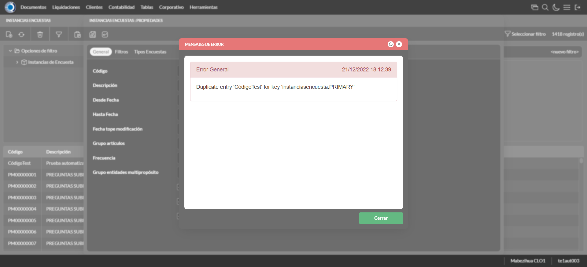 | ||||
test_043: Modifica Instancias Encuestas |
pt1_45: 2022-12-21 12:12:41,751 - root - INFO - Se presiona el boton 'Refrescar', para crear un nuevo registro igual al anterior.
2022-12-21 12:12:44,530 - root - INFO - Se da clic en el registro creado, para proceder a modificarlo.
2022-12-21 12:12:45,564 - root - INFO - Se modifica el contenido del campo Descripcion
2022-12-21 12:12:47,578 - root - INFO - Captura: C:\xampp\htdocs\versiones\automatizaciones\AutoPWST\ScriptAmarillo\report\img screen：20221221_12_12_47.png
2022-12-21 12:12:53,478 - root - INFO - Captura: C:\xampp\htdocs\versiones\automatizaciones\AutoPWST\ScriptAmarillo\report\img screen：20221221_12_12_53.png
2022-12-21 12:12:53,760 - root - INFO - Se hace el cambio de pestaña para continuar con el registro nuevo
2022-12-21 12:12:54,942 - root - INFO - Se da clic en el registro creado, para proceder a modificarlo.
2022-12-21 12:12:55,197 - root - INFO - Se presiona el boton 'Eliminar', para eliminar el registro.
2022-12-21 12:12:55,479 - root - INFO - Se presiona el boton 'Nuevo', para crear un nuevo registro.
2022-12-21 12:12:57,517 - root - INFO - Ingresa la Orden del nuevo registro
2022-12-21 12:12:57,673 - root - INFO - Se da clic en el boton Guardar; se debe crear un nuevo registro.
2022-12-21 12:12:57,919 - root - INFO - Se da clic en el boton Guardar; se debe modificar la informacion del registro.
|
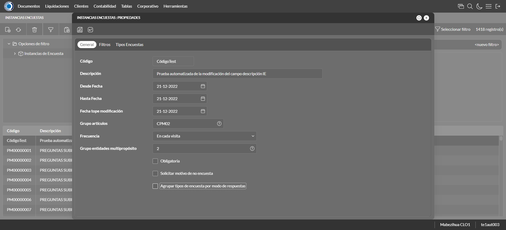 | ||||
test_044: Elimina Instancias Encuestas |
pt1_46: 2022-12-21 12:12:59,193 - root - INFO - Se presiona el boton 'Refrescar', para proceder a eliminar el registro.
2022-12-21 12:13:01,997 - root - INFO - Se da clic en el registro creado, para proceder a eliminarlo.
2022-12-21 12:13:02,774 - root - INFO - Se hace el cambio de pestaña para continuar con el registro nuevo
2022-12-21 12:13:08,166 - root - INFO - Se da clic en el registro creado, para proceder a modificarlo.
2022-12-21 12:13:08,341 - root - INFO - Se presiona el boton 'Eliminar', para eliminar el registro.
2022-12-21 12:13:08,434 - root - INFO - Se da clic en el boton Guardar; se debe modificar la informacion del registro.
2022-12-21 12:13:10,783 - root - INFO - Se da clic en el registro creado, para proceder a eliminarlo.
2022-12-21 12:13:10,886 - root - INFO - Se presiona el boton 'Eliminar', para eliminar el registro.
2022-12-21 12:13:12,893 - root - INFO - Captura: C:\xampp\htdocs\versiones\automatizaciones\AutoPWST\ScriptAmarillo\report\img screen：20221221_12_13_12.png
2022-12-21 12:13:13,241 - root - INFO - Se confirma el eliminado del registro
2022-12-21 12:13:13,715 - root - INFO - Se presiona el boton 'Refrescar', para crear un nuevo registro igual al anterior.
2022-12-21 12:13:14,233 - root - INFO - Se presiona el boton 'Cerrar', para cerrar la pantalla de Categorias Fiscales.
|

|
||||
test_045: Ingresa a pantalla Clasificacion Vendedor |
pt1_47: 2022-12-21 12:13:15,359 - root - INFO - Abre la pantalla de Clasificación Vendedor
2022-12-21 12:13:16,020 - root - INFO - La pantalla ejecutada es Clasificación Vendedor.
2022-12-21 12:13:16,022 - root - INFO - Captura: C:\xampp\htdocs\versiones\automatizaciones\AutoPWST\ScriptAmarillo\report\img screen：20221221_12_13_16.png
2022-12-21 12:13:16,440 - root - INFO - Se presiona el boton 'Nuevo', para crear un nuevo registro.
|

|
||||
test_046: Agregar Perfiles Clasificacion Vendedor |
pt1_48: 2022-12-21 12:13:17,083 - root - INFO - Se abrio la pantalla para el ingreso de un registro nuevo.
2022-12-21 12:13:17,267 - root - INFO - Ingresa el codigo del nuevo registro
2022-12-21 12:13:17,549 - root - INFO - Ingresa la descripción del nuevo registro
2022-12-21 12:13:17,552 - root - INFO - Captura: C:\xampp\htdocs\versiones\automatizaciones\AutoPWST\ScriptAmarillo\report\img screen：20221221_12_13_17.png
2022-12-21 12:13:17,911 - root - INFO - Se da clic en el boton Guardar; se debe crear un nuevo registro.
|
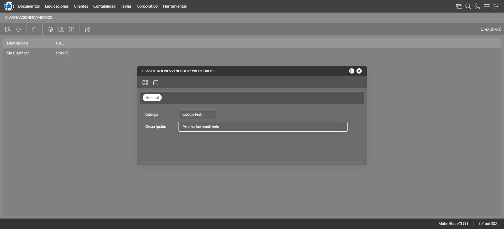 | ||||
test_047: Repetir Registro Clasificacion Vendedor |
pt1_49: 2022-12-21 12:13:18,132 - root - INFO - Se presiona el boton 'Refrescar', para crear un nuevo registro igual al anterior.
2022-12-21 12:13:20,288 - root - INFO - Se presiona el boton 'Nuevo', para crear un nuevo registro igual al anterior.
2022-12-21 12:13:20,927 - root - INFO - Se abrio la pantalla para el ingreso de un registro nuevo.
2022-12-21 12:13:21,106 - root - INFO - Ingresa el codigo del nuevo registro
2022-12-21 12:13:21,367 - root - INFO - Ingresa la descripción del nuevo registro
2022-12-21 12:13:21,559 - root - INFO - Se da clic en el boton Guardar; se debe crear un nuevo registro.
2022-12-21 12:13:23,572 - root - INFO - Captura: C:\xampp\htdocs\versiones\automatizaciones\AutoPWST\ScriptAmarillo\report\img screen：20221221_12_13_23.png
2022-12-21 12:13:23,963 - root - INFO - Se presiona el boton 'Cerrar', para cerrar el mensaje de duplicidad de llave primaria
2022-12-21 12:13:24,062 - root - INFO - Se presiona el boton 'Cerrar', para cerrar la ventana
|
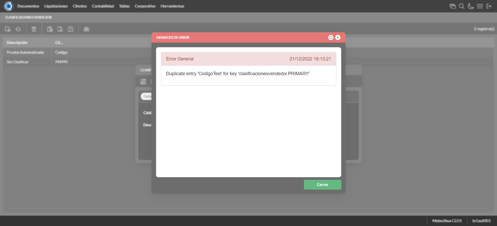 | ||||
test_048: Modifica Clasificacion Vendedor |
pt1_50: 2022-12-21 12:13:24,151 - root - INFO - Se presiona el boton 'Refrescar', para crear un nuevo registro igual al anterior.
2022-12-21 12:13:26,832 - root - INFO - Se da clic en el registro creado, para proceder a modificarlo.
2022-12-21 12:13:27,678 - root - INFO - Se modifica el contenido del campo Descripcion
2022-12-21 12:13:27,679 - root - INFO - Captura: C:\xampp\htdocs\versiones\automatizaciones\AutoPWST\ScriptAmarillo\report\img screen：20221221_12_13_27.png
2022-12-21 12:13:28,067 - root - INFO - Se da clic en el boton Guardar; se debe modificar la informacion del registro.
|

|
||||
test_049: Elimina Clasificacion Vendedor |
pt1_51: 2022-12-21 12:13:28,324 - root - INFO - Se presiona el boton 'Refrescar', para proceder a eliminar el registro.
2022-12-21 12:13:30,987 - root - INFO - Se da clic en el registro creado, para proceder a eliminarlo.
2022-12-21 12:13:31,044 - root - INFO - Se presiona el boton 'Eliminar', para eliminar el registro.
2022-12-21 12:13:33,047 - root - INFO - Captura: C:\xampp\htdocs\versiones\automatizaciones\AutoPWST\ScriptAmarillo\report\img screen：20221221_12_13_33.png
2022-12-21 12:13:33,249 - root - INFO - Se confirma el eliminado del registro
2022-12-21 12:13:33,357 - root - INFO - Se presiona el boton 'Refrescar', para crear un nuevo registro igual al anterior.
2022-12-21 12:13:35,443 - root - INFO - Se presiona el boton 'Cerrar', para cerrar la pantalla de Categorias Fiscales.
|

|
||||
test_050: Cerrar_Navegador |
pt1_52: 2022-12-21 12:13:39,738 - root - INFO - Se cierra chrome
|
|
||||
| Caso de prueba | 52 | 51 | 0 | 1 | Taza de resultado：98.08% | |